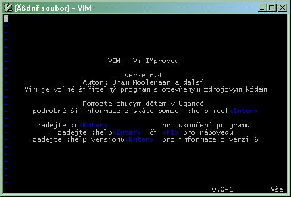

VIM


Jeden z nejpoužívanějších a nejlepších editorů pro Linux. Základy práce s ním patří k "dobrému vychování" snad každého, kdo to s počítači a programováním myslí vážně. Naučit se ho však není jednoduché ;-)
Editor pracuje ve třech základních režimech. Po spuštění naběhne Příkazový režim - marně se budete snažit něco napsat :-) . Kdo si předtím něco o VIMu nepřečte, nebude ho moci ani pomocí klávesnice ukončit :-D . Základy práce s tímto editorem jsou popsány v téměř každé lepší knize o Linuxu nebo na webu:
Původní VIM je čistě konsolový editor v Linuxu, existuje však již i okenní verze jak pro Linux, tak pro Windows. Vše nejlépe stahovat ze http://wwww.vim.org . Je tam i spousty dodatečných modulů na příjemnější a efektivnější práci s tímto editorem.
VIM a Python
Následuje pár tipů pro lepší práci s pythonýrskými programy a scripty. Neváhejte přidávat či opravovat, pokud znáte a chcete.
.vimrc:
set expandtab "misto tab mezery set tabstop=4 "velikost tabu set shiftwidth=4 "odsazeni bloku kodu set softtabstop=4 set hlsearch "zvyrazneni byhledavaneho textu set incsearch "postupne vyhledavani zapnuto set ignorecase "ignoruj pri hledadni velka a mala pismena set ruler set showcmd "ukazuj, jake zadavam prikazy set nowrap "nezalamuj radky set autoindent "automaticky odsazuj set fileencodings=utf-8,latin2,cp1250 "jake vsechna kodovani se mohou objevit set showmatch " zapisete-li pravou závorku, ukáze vám k ní set wildmenu " doplnovanie ostavajucej casti mena v prikazovom rezime set tag=./tags,~/.vim/tags/python.tags "? filetype on "automaticka detekce typu souboru filetype indent on "automaticka detekce odsazovani filetype plugin on syntax on "zvyraznovani zapnuto set mouse=a "s mysi jde vse lepe :-)
Spouštění scriptů, např:
map <F5> :silent !gnome-terminal -x python -i % <CR>
samozrejme lze namisto "gnome-terminal -x" spustit jiny terminal napriklad "xterm -e" (pozor na jmeno parametru).